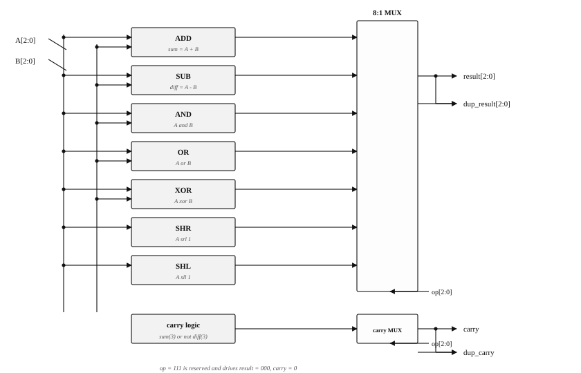
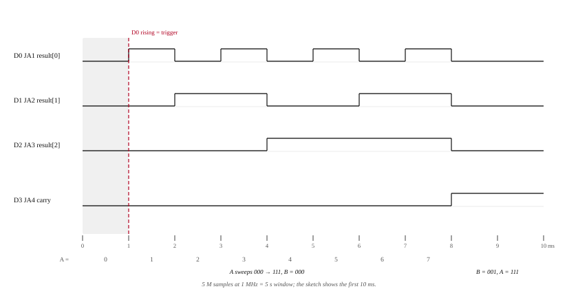

The aim of Laboratory 3 was to stop treating arithmetic as one large Boolean expression and to build a small arithmetic-logic unit (ALU) in which a two-bit code chooses the operation. The ALU takes two three-bit operands, A and B, and an operation code op[1:0], and produces a three-bit result and a carry. The four operations are addition, bitwise AND, bitwise XOR and a logical right shift of A by one bit.
The exercise had four purposes beyond producing a working circuit. The first was to revise the combinational-logic flow from Labs 1 and 2: write VHDL, simulate, constrain the pins, synthesise, implement and program the board. The second was to use VHDL type conversions deliberately. The manual's hint that srl works on BIT_VECTOR, not on STD_LOGIC_VECTOR, is the first place in the course where a conversion is not optional. The third was to use slicing and concatenation: the four-bit sum is formed from ('0' & A) + ('0' & B), and the shift result is '0' & A(2 downto 1). The fourth was to observe the same signals on a logic analyser through the PMOD header, so that the internal values are visible without trusting the LEDs alone.
I finished a purely combinational design. The testbench applies four stimuli, one per operation, and the waveform shows four distinct results. The board implementation maps the operands to SW0–SW5, the operation code to SW6–SW7, the result to LD0–LD2 and the carry to LD3. The duplicate outputs dup_result and dup_carry drive JA1–JA4 for the logic analyser. The report also answers Checkpoint 3 by describing the changes needed for an ALU with seven operations.
Table 1 fixes the behaviour before any VHDL is written. The important column is carry: only addition can produce a carry out of bit 2, so AND, XOR and shift force it to 0. Fixing that column first avoids the common mistake of leaving the carry output undefined for the logic operations.
| op[1:0] | Operation | result[2:0] | carry |
|---|---|---|---|
| 00 | ADD | (A + B) mod 8 | 1 if A + B ≥ 8, else 0 |
| 01 | AND | A and B (bitwise) | 0 |
| 10 | XOR | A xor B (bitwise) | 0 |
| 11 | SHR | A >> 1 (logical) | 0 |
The addition is performed on four bits. Concatenating a '0' in front of each operand widens it to four bits, so the sum has a fourth bit that is exactly the carry out of bit 2:
In arithmetic terms the result is (A + B) modulo 8 and the carry is 1 exactly when A + B is at least 8. For AND and XOR the operation is applied bit by bit, and the carry has no meaning, so it is tied to 0. For the shift, the most significant bit of the result is 0 and the two lower bits of A move down: result = '0' & A(2 downto 1). This is a logical shift, not an arithmetic shift; the old sign bit is not copied. With three-bit operands, A = 101 shifted right by one is 010, not 110.
One detail in the manual is easy to misread. The operators sll and srl are defined for BIT_VECTOR, not for STD_LOGIC_VECTOR. Writing A srl 1 with A declared as STD_LOGIC_VECTOR does not compile in VHDL-93. The design therefore converts to BIT_VECTOR, shifts, and converts back:
The conversion is explicit, and it keeps the shift in the type domain where the operator exists. A second, quieter detail is the default choice of the selected assignment. The manual's decoder example uses "ZZZZ" for when others; that is a tristate value for a shared bus, not a sensible default for an internal multiplexer. The ALU uses a concrete default instead, and the shift is the last named choice, so when others covers the shift and any simulation values such as "UU".
Listing 1 is the complete entity and architecture. The entity name is ALU, the same as the file name alu.vhd, because Vivado uses the file name when the source is added and a mismatch makes the top level harder to find. All ports are exactly the names used in the manual and in the XDC.
The first line that differs from the template is the library clause. The template only used IEEE.STD_LOGIC_1164.ALL. That package defines the types and the logical operators, but it does not define arithmetic + on STD_LOGIC_VECTOR. I added IEEE.STD_LOGIC_UNSIGNED.ALL so that + on the four-bit vectors is the unsigned addition I want. The alternative would have been NUMERIC_STD with unsigned(...) conversions; the unsigned package keeps the listing close to the manual's hint and avoids four conversions around the adder.
The sum is computed once in the concurrent assignment to tmp. The two selected signal assignments then choose the result and the carry from op. with op select is a concurrent statement, so it is equivalent to a multiplexer followed by a register-free output; there is no process, no sensitivity list and no chance of a latch. Every branch assigns a value, and the last branch is when others, so the outputs are defined for all four codes and for the meta-values that appear at time zero in simulation.
library IEEE;
use IEEE.STD_LOGIC_1164.ALL;
use IEEE.STD_LOGIC_UNSIGNED.ALL;
entity ALU is
Port ( A : in STD_LOGIC_VECTOR (2 downto 0);
B : in STD_LOGIC_VECTOR (2 downto 0);
op : in STD_LOGIC_VECTOR (1 downto 0);
result : out STD_LOGIC_VECTOR (2 downto 0);
carry : out STD_LOGIC;
dup_result : out STD_LOGIC_VECTOR (2 downto 0);
dup_carry : out STD_LOGIC);
end ALU;
architecture Behavioral of ALU is
signal result_t : STD_LOGIC_VECTOR (2 downto 0);
signal carry_t : STD_LOGIC;
signal tmp : STD_LOGIC_VECTOR (3 downto 0);
begin
-- 4-bit sum: tmp(3) is the carry-out, tmp(2 downto 0) is the 3-bit result.
tmp <= ('0' & A) + ('0' & B);
with op select
result_t <= tmp(2 downto 0) when "00",
A and B when "01",
A xor B when "10",
to_stdlogicvector(to_bitvector(A) srl 1) when others;
with op select
carry_t <= tmp(3) when "00",
'0' when others;
result <= result_t;
carry <= carry_t;
dup_result <= result_t;
dup_carry <= carry_t;
end Behavioral;
The duplicate outputs are simple concurrent copies of result_t and carry_t. They are not a second ALU and they do not change the logic; they exist because the LED pins and the PMOD header are different pins, and the analyser needs a copy on JA. The synthesiser keeps both copies because both drive output pins.
Listing 2 is the testbench. The entity has an empty port list because simulation has no pins. The component declaration repeats the ALU ports, and the port map uses named association. I used named association after the Lab 2 mistake of relying on positional order: when the ports were reordered, the design still elaborated but the operands were swapped, and the waveform looked plausible for the wrong reason.
The stimulus keeps A = 101 and B = 011 for all four segments. Those values were chosen so that the four results are different: 5 + 3 = 8 gives 000 with carry 1; 5 AND 3 = 1 gives 001; 5 XOR 3 = 6 gives 110; and 5 >> 1 = 2 gives 010. If two operations produced the same result, a swapped op connection could hide in the waveform.
| Time (ns) | op | Operation | A | B | result | carry |
|---|---|---|---|---|---|---|
| 0–10 | 00 | ADD | 101 | 011 | 000 | 1 |
| 10–20 | 01 | AND | 101 | 011 | 001 | 0 |
| 20–30 | 10 | XOR | 101 | 011 | 110 | 0 |
| 30–40 | 11 | SHR | 101 | 011 | 010 | 0 |
Each assignment is followed by wait for 10 ns, and the final wait; stops the process. Without the final wait the process would immediately repeat; the last segment would be the only one visible, and the first three would be a blur of delta cycles. The initial values on A, B and op make the first delta cycle deterministic, so the waveform has a defined value before the first assignment.
begin
-- Named port mapping: the order of the ports in the entity does not matter.
uut: ALU PORT MAP (A => A,
B => B,
op => op,
result => result,
carry => carry,
dup_result => dup_result,
dup_carry => dup_carry);
siggen: PROCESS
begin
-- 5 + 3 = 8 : result 000, carry 1
op <= "00";
wait for 10 ns;
-- 5 AND 3 = 1
op <= "01";
wait for 10 ns;
-- 5 XOR 3 = 6
op <= "10";
wait for 10 ns;
-- 5 >> 1 = 2
op <= "11";
wait for 10 ns;
-- Stop the process; without this wait the process would run forever.
wait;
end PROCESS siggen;
end Behavioral;
Table 3 maps the ports to the Basys 3. The operands use SW0–SW5, the operation code uses SW6–SW7, the result uses LD0–LD2 and the carry uses LD3. The four JA pins repeat the same values for the logic analyser. The pin numbers are taken from the Basys 3 master XDC, not typed from memory.
| Signal | Pins | Board element |
|---|---|---|
| A[2:0] | V17, V16, W16 | SW0, SW1, SW2 |
| B[2:0] | W17, W15, V15 | SW3, SW4, SW5 |
| op[1:0] | W14, W13 | SW6, SW7 |
| result[2:0] | U16, E19, U19 | LD0, LD1, LD2 |
| carry | V19 | LD3 |
| dup_result[2:0] | J1, L2, J2 | JA1, JA2, JA3 |
| dup_carry | G2 | JA4 |
Two details in the XDC matter. First, the names in get_ports must match the VHDL names exactly, including the indices: {A[0]}, not {A0}. A mismatch does not stop synthesis, but implementation reports unplaced ports and the bit never reaches the pin. Second, every pin needs IOSTANDARD LVCMOS33; a missing IOSTANDARD is a DRC error at implementation. The CFGBVS and CONFIG_VOLTAGE properties are set once for the design, as in the master XDC.
The duplicate outputs are copies of result_t and carry_t, so the LED and the analyser see the same signal. Without the copies the analyser would have to probe an LED pin, which is not brought out to a header. The four JA pins are also the reason the entity has two extra output ports that the operation table does not mention.
Figure 2 is the datapath I expect Vivado to infer. The adder is a four-bit carry chain; the AND, XOR and shift are separate combinational blocks; the output select is a four-to-one multiplexer driven by op. The manual's RTL schematic on page 5 of the lab sheet shows the same blocks with Vivado's names RTL_ADD, RTL_AND, RTL_XOR, RTL_RSHIFT and RTL_MUX. The exact gate count is not important; what matters is that no latch appears. Every output is assigned in every branch of the selected assignment, so the design is purely combinational.

Figure 3 is the waveform for the four segments. The phase labels along the top mark ADD, AND, XOR and SHR. The cursor is at 35 ns, inside the SHR segment, where result = 010 and carry = 0. Table 4 repeats the values so that the figure can be checked without reading the waveform labels.
| Segment | op | A | B | result | carry | dup_result | dup_carry |
|---|---|---|---|---|---|---|---|
| ADD | 00 | 101 | 011 | 000 | 1 | 000 | 1 |
| AND | 01 | 101 | 011 | 001 | 0 | 001 | 0 |
| XOR | 10 | 101 | 011 | 110 | 0 | 110 | 0 |
| SHR | 11 | 101 | 011 | 010 | 0 | 010 | 0 |
Three things are worth checking rather than only the result. First, carry is 1 only in the first segment; if it were 1 in AND or XOR, the carry selected assignment would be wrong. Second, dup_result and dup_carry follow result and carry exactly; a mismatch would mean a port-map or copy error. Third, the transition at 10 ns is clean: no delta-cycle glitch remains at the sample point because the testbench waits a full 10 ns between changes.
The same stimulus is ready for XSim. The vector figure is drawn from the simulation values rather than a screenshot so that the numbers stay readable in print; the guide lists the screenshot to capture for the demonstrator.

Table 5 lists ten cases for the board. The first four exercise addition and the carry, including the two rows where the result is 000 but the carry is 1. The next four exercise AND and XOR. The last two exercise the shift. The switch pattern is written from SW7 down to SW0, so it can be read as one byte; the labels on the board are the authority for which physical switch is which.
| # | A | B | op | result | carry | LD3..LD0 | SW7..SW0 |
|---|---|---|---|---|---|---|---|
| 1 | 011 | 010 | 00 | 101 | 0 | 0101 | 00 010 011 |
| 2 | 111 | 001 | 00 | 000 | 1 | 1000 | 00 001 111 |
| 3 | 110 | 011 | 00 | 001 | 1 | 1001 | 00 011 110 |
| 4 | 111 | 111 | 00 | 110 | 1 | 1110 | 00 111 111 |
| 5 | 110 | 101 | 01 | 100 | 0 | 0100 | 01 101 110 |
| 6 | 101 | 011 | 01 | 001 | 0 | 0001 | 01 011 101 |
| 7 | 101 | 011 | 10 | 110 | 0 | 0110 | 10 011 101 |
| 8 | 110 | 101 | 10 | 011 | 0 | 0011 | 10 101 110 |
| 9 | 101 | 000 | 11 | 010 | 0 | 0010 | 11 000 101 |
| 10 | 111 | 000 | 11 | 011 | 0 | 0011 | 11 000 111 |
Two rows are easy to misjudge. 7 + 1 = 8 gives result = 000 and carry = 1; the LEDs show 1000, not 0000, because LD3 is the carry. 7 + 7 = 14 gives 110 with carry 1; the pattern is 1110. If LD3 is ignored, both rows look like failures. The shift rows are also worth checking: 5 >> 1 is 2 (010), not 6 (110), because the shift is logical and the new MSB is 0.
The switch order is the other practical trap. On the board SW0 is at one end of the bank and SW7 at the other; the table writes the pattern from SW7 down to SW0. The switches are set by the labels printed on the board, not by counting from the left. The expected values in Table 5 were produced by the same reference model that generated alu_expected.csv, so Table 1, Table 5 and the CSV cannot disagree without the model being wrong.
The manual asks how to modify the VHDL for seven operations. The clean change is to widen op to three bits: two bits give only four codes, and no amount of decoding creates three more. Table 6 lists the seven operations and the reserved code.
| op[2:0] | Operation | result[2:0] | carry |
|---|---|---|---|
| 000 | ADD | (A + B) mod 8 | 1 if A + B ≥ 8, else 0 |
| 001 | SUB | (A − B) mod 8 | 1 if A ≥ B (no borrow), else 0 |
| 010 | AND | A and B | 0 |
| 011 | OR | A or B | 0 |
| 100 | XOR | A xor B | 0 |
| 101 | SHR | A >> 1 | 0 |
| 110 | SHL | A << 1 (mod 8) | 0 |
| 111 | reserved | 000 | 0 |
The datapath grows in three places. The output select becomes an eight-to-one multiplexer. The adder is shared by ADD and SUB: subtraction is A + (not B) + 1 in two's complement, so diff <= ('0' & A) + (not ('0' & B)) + "0001". The shift group gains SHL, which is A(1 downto 0) & '0'. AND, OR and XOR reuse the existing gates.
Three details are easy to get wrong. The extra op bit needs a pin: SW8 is V2 on the Basys 3, and the XDC must add op[2]. The reserved code 111 should drive a defined value (000, carry 0), not 'Z'. And the carry for SUB is not diff(3); it is the inverse, because diff(3) = 1 means A < B and therefore a borrow. The expression not diff(3) is the no-borrow flag.
The seven-operation testbench uses different operands in each segment so that the seven results are distinct: 001, 101, 100, 111, 011, 010, 110. That makes a swapped op connection obvious. The full design is in alu_7ops.vhd and its testbench in alu_7ops_tb.vhd; the listing below shows the operation selection and the carry selection.
signal sum : STD_LOGIC_VECTOR (3 downto 0);
signal diff : STD_LOGIC_VECTOR (3 downto 0);
begin
sum <= ('0' & A) + ('0' & B);
diff <= ('0' & A) + (not ('0' & B)) + "0001";
with op select
result_t <= sum(2 downto 0) when "000",
diff(2 downto 0) when "001",
A and B when "010",
A or B when "011",
A xor B when "100",
to_stdlogicvector(to_bitvector(A) srl 1) when "101",
A(1 downto 0) & '0' when "110",
"000" when others;
with op select
carry_t <= sum(3) when "000",
not diff(3) when "001",
'0' when others;

Experiment 2 observes the same signals on the PMOD header. The wiring is: black to GND, brown to JA1, red to JA2, orange to JA3 and yellow to JA4. The black wire must go to a GND pin, not VCC; the PMOD pinout marks pins 5 and 11 as GND and pins 6 and 12 as VCC. A mistake here gives a flat trace, and on some analysers it can damage the input.
PulseView is set to trigger on D0 rising, with 5 M samples at 1 MHz. The trigger channel is JA1 = dup_result[0], the LSB of the result. With B = 000 and op = 00, the result equals A, so D0 is A(0); it rises every time A goes from even to odd. That edge starts the capture.
| Analyser channel | JA pin | ALU signal | Meaning |
|---|---|---|---|
| D0 | JA1 | dup_result[0] | result LSB |
| D1 | JA2 | dup_result[1] | result bit 1 |
| D2 | JA3 | dup_result[2] | result MSB |
| D3 | JA4 | dup_carry | carry |
Figure 5 is the expected capture. The first eight steps sweep A from 000 to 111 with B = 000. D0 toggles at every step, D1 at every second step, D2 at every fourth step, and D3 stays 0. The last two steps set B = 001 and A = 111; 7 + 1 = 8 gives result = 000 and carry = 1, so D3 goes high while D0–D2 fall. That is the one place where the carry appears in the capture.

The manual's text says 5 M samples at 1 MHz, while the screenshot on page 10 shows 1 M samples at 20 kHz. Both are valid: 5 M at 1 MHz gives a 5 s window with 1 µs resolution; 1 M at 20 kHz gives a 50 s window with 50 µs resolution. The slower setting is easier for a hand sweep; the faster one is needed if the switches are changed quickly. The guide gives both settings so the choice can be made at the bench.
One limitation of the vector figure: it is an idealised capture. A real capture shows switch bounce as short bursts at each edge, because the analyser is fast enough to record it. The bounce is not an ALU fault. If the trace looks like a staircase with extra narrow pulses at the steps, that is the switch, not the logic.
Several errors are easy to make in this flow, and each one points to a different part. They are recorded here because the fix is more useful than the final listing.
The ALU meets the four-operation specification. The design is purely combinational, the carry is correct for addition, the logic operations force the carry to 0, and the shift is logical. The duplicate outputs make the internal values visible on JA without changing the logic. The testbench drives four distinct results, and the board table covers the carry cases that are easy to misread.
The most useful part of the exercise was not the arithmetic; it was the discipline of fixing the behaviour in a table before writing VHDL and then checking the table against a testbench. The four-bit sum with tmp(3) as the carry is a small trick, but it removed a separate carry equation and made the addition and the carry provably consistent. The shift conversion was the first time in the course where the type of a signal changed the operators that were available, and the explicit conversion is clearer than a comment claiming that the shift is logical.
Checkpoint 3 showed that the same structure extends to seven operations with a wider select and a shared add/sub unit; the main cost is one more switch and a wider XDC. The reserved code is a reminder that widening an operation code always creates codes that must be defined, and that when others is the place to define them.
The design is ready for the board session. The remaining work is to confirm the ten cases in Table 5 and capture the logic-analyser trace; the report's figures are vector redraws so that the values stay legible, and the guide lists the screenshots to add. The full source, the constraints, the project script and the expected-value CSV are in the same repository as this report.